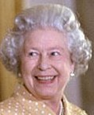

let's start of easy with this. One of the many things that make Queen Elizabeth beautiful is her hair.
I mean, just look at that hair! It's so perfect. The way it's always brushed nicely and it's never ratty, there are no knots in this perfect woman's hair. It was even described as "immaculately coiffed hair" by "HELLO! Magazine"
 Now I know you’ve been wondering; how does she get her hair to look like that?
Well, this 95-year-old monarch has a special hairdresser that keeps her hair entirely symmetrical. This hairdresser is named, Scott Ian Carmichael. Mr. Carmichael has been the Queen's hairdresser for 19 years, and he has been visiting the Queen at her home twice a week.
He must do this because the queen has naturally curly hair, but instead of letting her miraculous curls out she keeps well-groomed to make sure that she looks the same in every image as so to uphold her reputation.
Image information: White House photo by Eric Draper - Wikkimedia Commons - Public domain